Capítulo 5 Plotando
5.1 plot (base)
Exemplo: Dados de qualidade do ar
df <- readRDS("dados/df.rds")
summary(df)## Warning in as.POSIXlt.POSIXct(x, tz): unknown timezone 'Americas/Sao_Paulo'## TipodeRede TipodeMonitoramento Tipo
## Automático:8581 CETESB:8581 Dados Primários:8581
##
##
##
##
##
##
## Data Hora CodigoEstaÃ.Ã.o
## 01/01/2014: 24 16:00 : 363 Min. :95
## 01/01/2015: 24 12:00 : 361 1st Qu.:95
## 01/02/2014: 24 14:00 : 361 Median :95
## 01/04/2014: 24 18:00 : 361 Mean :95
## 01/05/2014: 24 13:00 : 360 3rd Qu.:95
## 01/06/2014: 24 17:00 : 360 Max. :95
## (Other) :8437 (Other):6415
## NomeEstaÃ.Ã.o NomeParÃ.metro
## Cid.Universitária-USP-Ipen:8581 NOx (Óxidos de Nitrogênio):8581
##
##
##
##
##
##
## UnidadedeMedida MediaHoraria MediaMovel Valido
## ppb:8581 Min. : 0.00 -:8581 Não: 907
## 1st Qu.: 9.00 Sim :7674
## Median : 18.00
## Mean : 29.87
## 3rd Qu.: 34.00
## Max. :306.00
## NA's :260
## tempo_char tempo weekdays
## Length:8581 Min. :2014-01-01 01:00:00 Length:8581
## Class :character 1st Qu.:2014-04-05 14:00:00 Class :character
## Mode :character Median :2014-07-05 23:00:00 Mode :character
## Mean :2014-07-04 20:22:55
## 3rd Qu.:2014-10-03 10:00:00
## Max. :2015-01-02 00:00:00
##
## mes diajuliano ano
## Length:8581 Length:8581 Length:8581
## Class :character Class :difftime Class :character
## Mode :character Mode :numeric Mode :character
##
##
##
## A função plot precisa dos seguintes argumentos:
args(plot)## function (x, y, ...)
## NULLEntão, a forma mais fácil de plotar uma variável em função do tempo é:
plot(x = df$tempo, y = df$MediaHoraria)## Warning in as.POSIXlt.POSIXct(z): unknown timezone 'Americas/Sao_Paulo'## Warning in as.POSIXct.POSIXlt(zz): unknown timezone 'Americas/Sao_Paulo'## Warning in as.POSIXlt.POSIXct(x, tz): unknown timezone 'Americas/Sao_Paulo'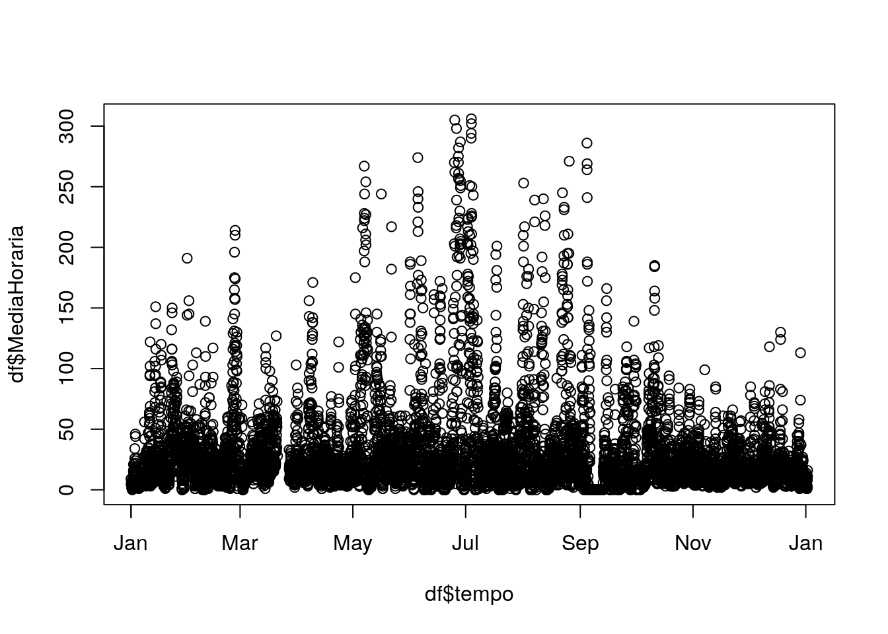
Feio, né?
Tentando deixar mais bonito…
plot(x = df$tempo[1:100], y = df$MediaHoraria[1:100], #-- Selecionando uma parte do df!
pch = 16, #-- Forma do ponto (círculo preenchido)
type = "b", #-- Tipo de gráfico ("b" = both, ponto e linha)
col = "blue", #-- Cor do elemento (definido pelo type)
xlab = "Data", ylab = "NOx [ppb]", #-- Nome dos eixos x e y
main = "Gráfico mais Bonito") #-- Título do gráfico## Warning in as.POSIXlt.POSIXct(x): unknown timezone 'Americas/Sao_Paulo'## Warning in as.POSIXct.POSIXlt(round(z, "days")): unknown timezone
## 'Americas/Sao_Paulo'## Warning in as.POSIXlt.POSIXct(x, tz): unknown timezone 'Americas/Sao_Paulo'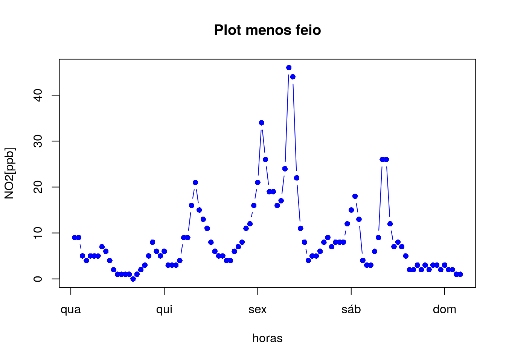
Colocando DOIS elementos no mesmo gráfico:
df_parcial <- df[1:180,] #-- Selecionando uma parte do df!
plot(x = df_parcial$tempo[df_parcial$Valido == "Sim"],
y = df_parcial$MediaHoraria[df_parcial$Valido == "Sim"],
pch = 16, type = "b", col = "blue",
xlab = "Data", ylab = "NOx [ppb]",
main = "Dados Válidos e Inválidos")## Warning in as.POSIXlt.POSIXct(x): unknown timezone 'Americas/Sao_Paulo'## Warning in as.POSIXct.POSIXlt(round(z, "days")): unknown timezone
## 'Americas/Sao_Paulo'## Warning in as.POSIXlt.POSIXct(x, tz): unknown timezone 'Americas/Sao_Paulo'lines(x = df_parcial$tempo[df$Valido == "Não"],
y = df_parcial$MediaHoraria[df$Valido == "Não"],
pch = 15, type = "b", col = "red")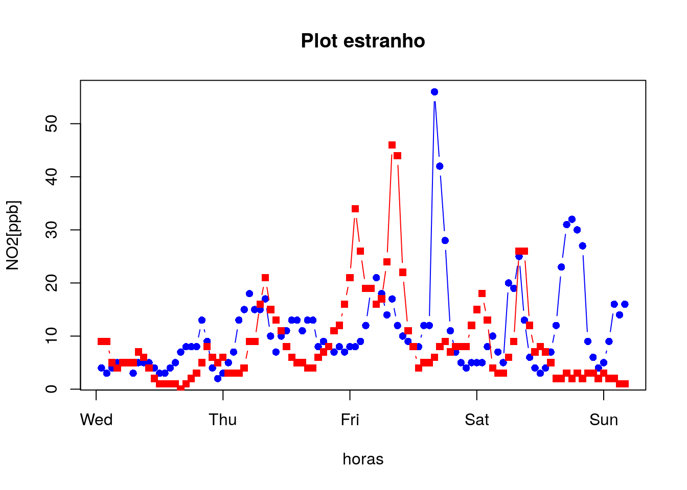
Desafio: Coloque uma legenda na figura especificando que os dados válidos estão em azul e os inválidos em vermelho
A função plot cumpre bem o papel de gerar um gráfico simples, e até permite algumas customizações, mas ela exige cada vez mais linhas de código e argumentos dentro das funções para deixar o gráfico “mais bonito” - ao cumprir o desafio, você irá perceber como uma coisa “simples” como colocar uma legenda pode exigir muito mais do que parece!
5.2 ggplot (ggplot2)
A função ggplot funciona de um jeito um pouco diferente. Veja a figura abaixo:
Em vez de uma única função, o gráfico é formado por camadas, sendo que cada camada é um elemento (geom_... ou stat_...) ou configuração (scale_..._..., coord_..., theme ou theme_..., guides, labs, etc). Consulte a maioria das opções disponíveis em Data Visualization Cheatsheet.
Que tal refazermos os gráficos da seção anterior?
#-- Não esqueça de carregar o pacote!
library(ggplot2)ggplot(df, aes(x = tempo, y = MediaHoraria)) +
geom_point(pch = 1)## Warning in as.POSIXlt.POSIXct(x): unknown timezone 'Americas/Sao_Paulo'## Warning in as.POSIXct.POSIXlt(from): unknown timezone 'Americas/Sao_Paulo'## Warning in as.POSIXlt.POSIXct(to): unknown timezone 'Americas/Sao_Paulo'## Warning in as.POSIXct.POSIXlt(r1): unknown timezone 'Americas/Sao_Paulo'## Warning in as.POSIXlt.POSIXct(from): unknown timezone 'Americas/Sao_Paulo'## Warning in as.POSIXct.POSIXlt(r1): unknown timezone 'Americas/Sao_Paulo'## Warning in as.POSIXlt.POSIXct(x): unknown timezone 'Americas/Sao_Paulo'## Warning in as.POSIXct.POSIXlt(from): unknown timezone 'Americas/Sao_Paulo'## Warning in as.POSIXlt.POSIXct(to): unknown timezone 'Americas/Sao_Paulo'## Warning in as.POSIXct.POSIXlt(r1): unknown timezone 'Americas/Sao_Paulo'## Warning in as.POSIXlt.POSIXct(from): unknown timezone 'Americas/Sao_Paulo'## Warning in as.POSIXct.POSIXlt(r1): unknown timezone 'Americas/Sao_Paulo'## Warning in as.POSIXlt.POSIXct(x, tz): unknown timezone 'Americas/Sao_Paulo'## Warning: Removed 260 rows containing missing values (geom_point).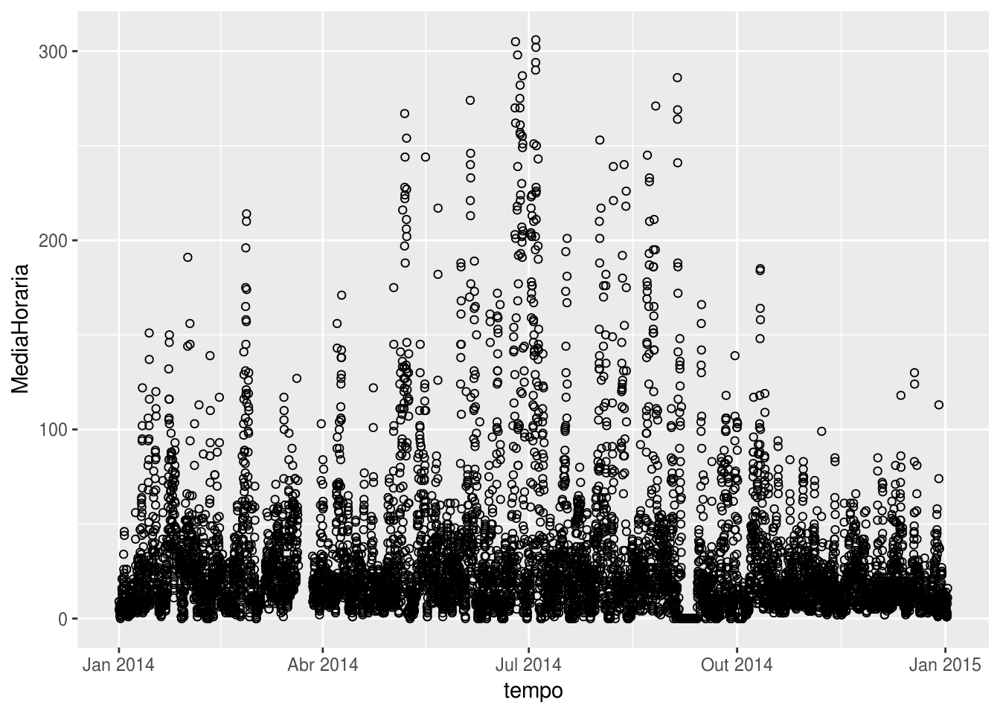
ggplot(df[1:100,], aes(x = tempo, y = MediaHoraria)) +
geom_line(color = "blue") + #-- Linhas...
geom_point(color = "blue", pch = 16) + #-- ... com pontos
labs(title = "Gráfico mais Bonito", x = "Data", y = "NOx [ppb]") + #-- Títulos
theme(plot.title = element_text(hjust = 0.5)) #-- Centralizando o título## Warning in as.POSIXlt.POSIXct(x): unknown timezone 'Americas/Sao_Paulo'## Warning in as.POSIXct.POSIXlt(from): unknown timezone 'Americas/Sao_Paulo'
## Warning in as.POSIXct.POSIXlt(from): unknown timezone 'Americas/Sao_Paulo'## Warning in as.POSIXct.POSIXlt(r1): unknown timezone 'Americas/Sao_Paulo'## Warning in as.POSIXlt.POSIXct(from): unknown timezone 'Americas/Sao_Paulo'## Warning in as.POSIXct.POSIXlt(r1): unknown timezone 'Americas/Sao_Paulo'## Warning in as.POSIXlt.POSIXct(x): unknown timezone 'Americas/Sao_Paulo'## Warning in as.POSIXct.POSIXlt(from): unknown timezone 'Americas/Sao_Paulo'
## Warning in as.POSIXct.POSIXlt(from): unknown timezone 'Americas/Sao_Paulo'## Warning in as.POSIXct.POSIXlt(r1): unknown timezone 'Americas/Sao_Paulo'## Warning in as.POSIXlt.POSIXct(from): unknown timezone 'Americas/Sao_Paulo'## Warning in as.POSIXct.POSIXlt(r1): unknown timezone 'Americas/Sao_Paulo'## Warning in as.POSIXlt.POSIXct(x, tz): unknown timezone 'Americas/Sao_Paulo'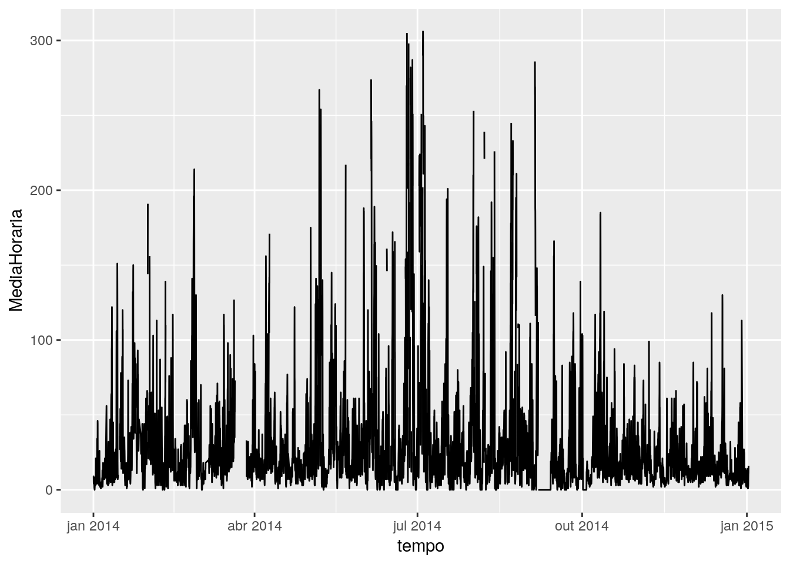
Agora o mais interessante:
ggplot(df[1:180,], aes(x = tempo, y = MediaHoraria)) +
geom_line(aes(color = Valido)) +
geom_point(aes(color = Valido, shape = Valido)) +
labs(title = "Dados Válidos e Inválidos", x = "Data", y = "NOx [ppb]") +
scale_color_manual(values = c("red", "blue")) + #-- Definindo as cores manualmente
scale_shape_manual(values = c(15, 16)) + #-- Definindo as formas manualmente
theme(plot.title = element_text(hjust = 0.5))## Warning in as.POSIXlt.POSIXct(x): unknown timezone 'Americas/Sao_Paulo'## Warning in as.POSIXct.POSIXlt(from): unknown timezone 'Americas/Sao_Paulo'
## Warning in as.POSIXct.POSIXlt(from): unknown timezone 'Americas/Sao_Paulo'## Warning in as.POSIXct.POSIXlt(r1): unknown timezone 'Americas/Sao_Paulo'## Warning in as.POSIXlt.POSIXct(from): unknown timezone 'Americas/Sao_Paulo'## Warning in as.POSIXct.POSIXlt(r1): unknown timezone 'Americas/Sao_Paulo'## Warning in as.POSIXlt.POSIXct(x, tz): unknown timezone 'Americas/Sao_Paulo'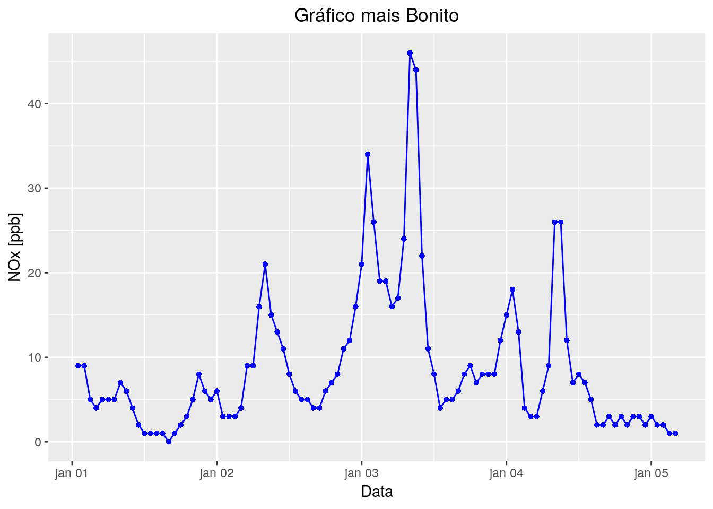
Pergunta: Qual a principal diferença entre o código acima e o código usando plot?
A função ggplot plota apenas data frames, pois ela mapeia as variáveis por nomes de colunas. Assim, é preciso converter matrizes ou arrays em data frames.
Uma vantagem de trabalharmos com data frames, como já vimos antes, é poder manipular esses dados de muitas formas possíveis antes de plotá-los.
Continuação do Exemplo: Extraindo algumas informações sobre os dados
Vamos analisar o ano de 2014:
- Em média, como o NOx varia ao longo do dia?
- E para cada dia da semana?
- E para cada mês?
- E para cada dia da semana?
Usando algumas funções dentro do pacote tidyverse, que funcionam bem com o pipe (%>%):
library(tidyverse)
df_2014 <- filter(df, ano == "2014")
df_2014_hour <- df_2014 %>% #-- A partir do data frame df_2014
group_by(Hora) %>% #-- Agrupe os dados pela coluna hora
summarise(Media = mean(MediaHoraria, na.rm = T)) %>% #-- E calcule as médias,
#-- salvando em uma coluna nova
mutate(Hora = as.POSIXct(strptime(Hora, "%H:%M"))) %>% #-- Transformando em data
ungroup() #-- Desagrupando
ggplot(df_2014_hour) +
scale_x_datetime(date_labels = "%H:%M") + #-- Formato de data que aparecerá no eixo x
geom_line(aes(x = Hora, y = Media, group = 1), color = "purple") +
labs(title = "Média Horária Anual", y = "NOx [ppb]")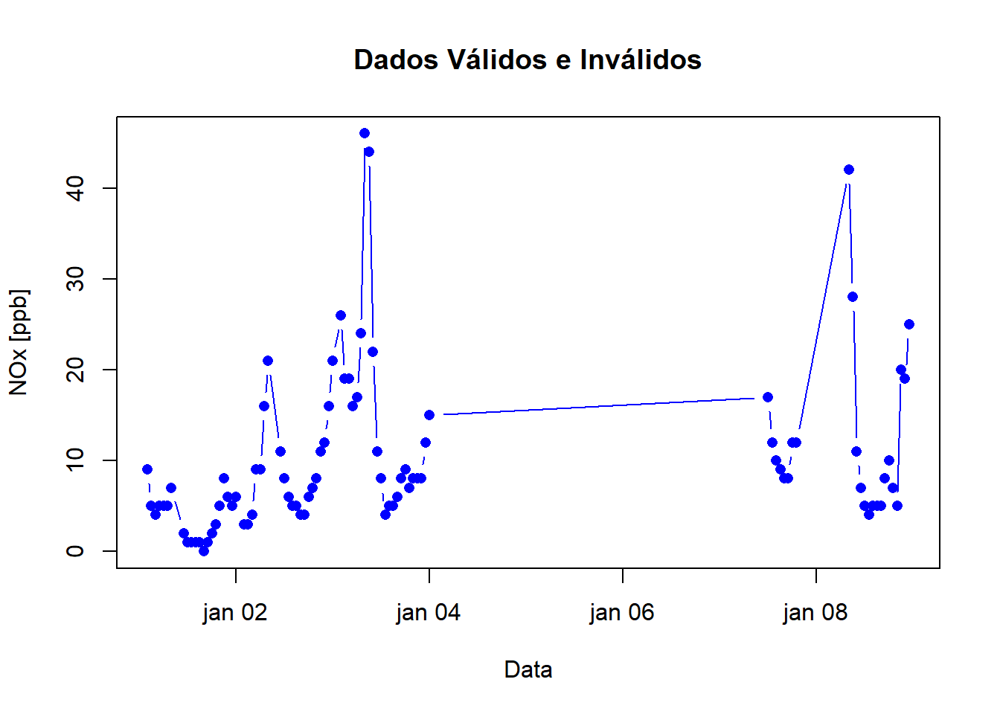
df_2014_weekly <- df_2014 %>%
group_by(Hora, weekdays) %>% #-- Agrupando os dados pelas colunas Hora e weekdays
summarise(Media = mean(MediaHoraria, na.rm = T)) %>%
ungroup() %>%
mutate(Hora = as.POSIXct(strptime(Hora, "%H:%M"))) %>%
mutate(weekdays = factor(weekdays, levels = c("segunda", "terça", "quarta",
"quinta", "sexta", "sábado",
"domingo"))) #-- Ordenando os dias da semana
ggplot(df_2014_weekly) +
scale_x_datetime(date_labels = "%H:%M") +
geom_col(aes(x = Hora, y = Media), fill = "purple") +
labs(title = "Média Horária Anual por Dia da Semana", y = "NOx [ppb]") +
facet_wrap(~ weekdays) #-- Criando paineis em função do dia da semana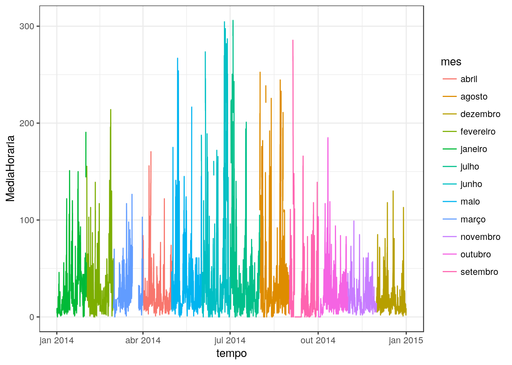
df_2014_monthly <- df_2014 %>%
group_by(Hora, mes) %>% #-- Agrupando os dados pelas colunas Hora e mes
summarise(Media = mean(MediaHoraria, na.rm = T)) %>%
ungroup() %>%
mutate(Hora = as.POSIXct(strptime(Hora, "%H:%M"))) %>%
mutate(mes = factor(mes, levels = c("janeiro", "fevereiro", "março",
"abril", "maio", "junho", "julho",
"agosto", "setembro", "outubro",
"novembro", "dezembro"))) #-- Ordenando os meses
ggplot(df_2014_monthly) +
scale_x_datetime(date_labels = "%H:%M") +
geom_col(aes(x = Hora, y = Media), fill = "purple") +
labs(title = "Média Horária Anual por Mes", y = "NOx [ppb]") +
facet_wrap(~ mes) #-- Criando paineis em função do mês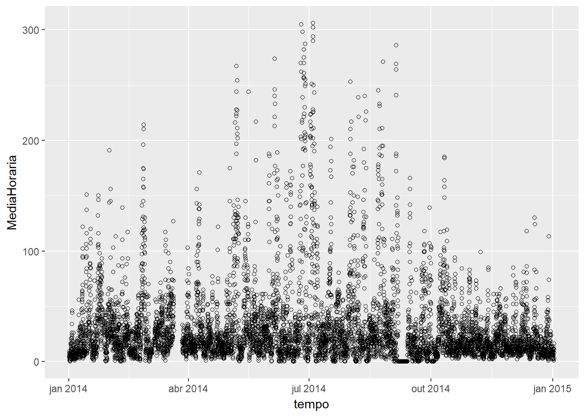
Exercício: Em média, como os dados válidos de NOx variam mensalmente ao longo do ano de 2014? Faça um gráfico.
Desafio: Ainda é possível melhorar os gráficos acima! Pesquise como:
* Diminuir a quantidade de horários no eixo x
* Separar por dias da semana e meses a partir da coluna “tempo”, não precisando usar as colunas de caracteres e consequentemente ordená-las manualmente
5.2.1 Explorando outras escalas de cores e temas
Pacotes veinreport e cptcity
devtools::install_github("atmoschem/veinreport")library(veinreport)
library(cptcity)Refazendo alguns gráficos:
ggplot(df, aes(x = tempo, y = MediaHoraria)) +
geom_line(aes(color = MediaHoraria)) +
labs(x = "Data", y = "NOx [ppb]") +
scale_color_gradientn(colours = cpt()) + #-- Definindo as cores com uma escala gradiente
theme_black()## Warning in as.POSIXlt.POSIXct(x): unknown timezone 'Americas/Sao_Paulo'## Warning in as.POSIXct.POSIXlt(from): unknown timezone 'Americas/Sao_Paulo'## Warning in as.POSIXlt.POSIXct(to): unknown timezone 'Americas/Sao_Paulo'## Warning in as.POSIXct.POSIXlt(r1): unknown timezone 'Americas/Sao_Paulo'## Warning in as.POSIXlt.POSIXct(from): unknown timezone 'Americas/Sao_Paulo'## Warning in as.POSIXct.POSIXlt(r1): unknown timezone 'Americas/Sao_Paulo'## Warning in as.POSIXlt.POSIXct(x): unknown timezone 'Americas/Sao_Paulo'## Warning in as.POSIXct.POSIXlt(from): unknown timezone 'Americas/Sao_Paulo'## Warning in as.POSIXlt.POSIXct(to): unknown timezone 'Americas/Sao_Paulo'## Warning in as.POSIXct.POSIXlt(r1): unknown timezone 'Americas/Sao_Paulo'## Warning in as.POSIXlt.POSIXct(from): unknown timezone 'Americas/Sao_Paulo'## Warning in as.POSIXct.POSIXlt(r1): unknown timezone 'Americas/Sao_Paulo'## Warning in as.POSIXlt.POSIXct(x, tz): unknown timezone 'Americas/Sao_Paulo'## Warning: Removed 1 rows containing missing values (geom_path).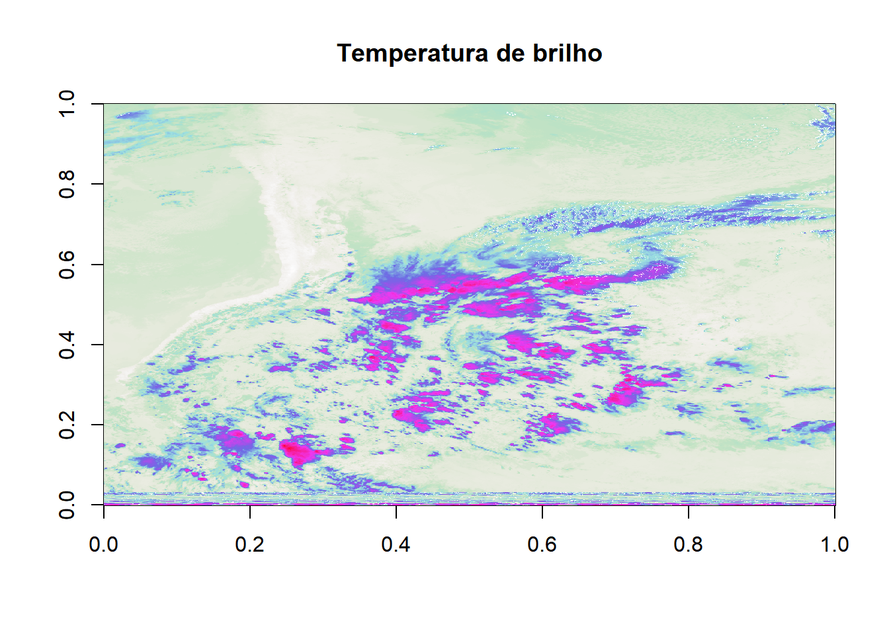
Experimentando escalas de cores com a função lucky:
ggplot(df_2014_monthly) +
scale_x_datetime(date_labels = "%H:%M") +
geom_col(aes(x = Hora, y = Media, fill = Media)) +
labs(title = "Média Horária Anual por Mes", y = "NOx [ppb]") +
scale_fill_gradientn(colors = lucky()) + #-- Definindo as cores com uma escala gradiente aleatória
theme_black() +
theme(legend.position = "bottom", legend.direction = "horizontal") + #-- Colocando a legenda na parte de baixo da figura
facet_wrap(~ mes) #-- Criando paineis em função do mês## Colour gradient: nd_rich_Split_Complementary_01, number: 5709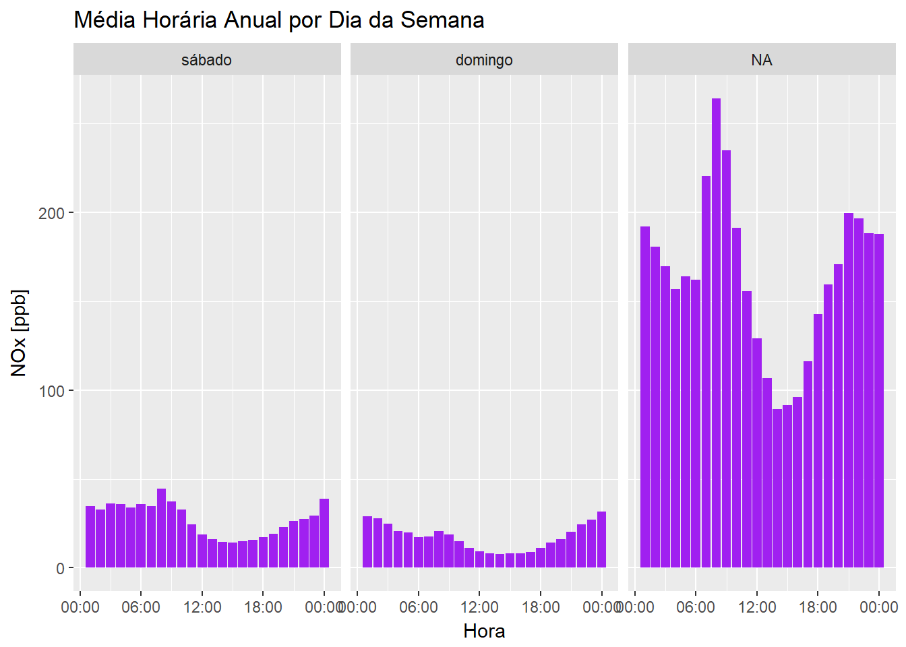
Este é só o começo! Veja aqui um pouco mais das muitas aplicações do ggplot.